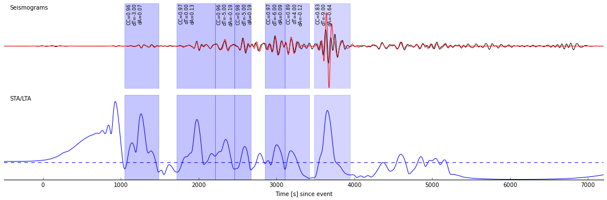
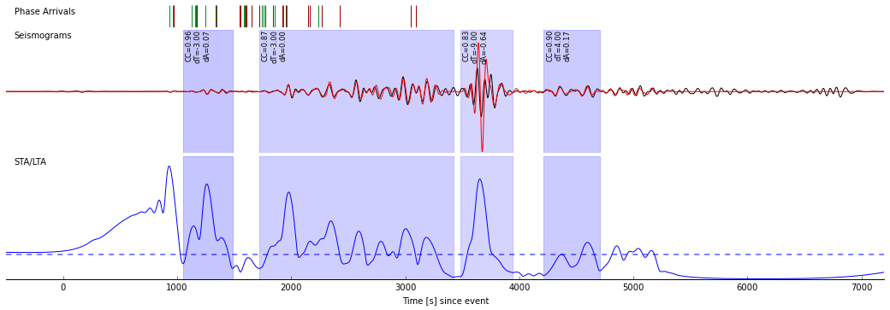

Pyflex
Pyflex is a Python port of the FLEXWIN algorithm for
automatically selecting windows for seismic tomography. For the most
part it mimicks the calculations of the original FLEXWIN package;
minor differences and their reasoning are detailed later.
To give credit where credit is due, the original FLEXWIN program can
be downloaded here,
the corresponding publication is
Maggi, A., Tape, C., Chen, M., Chao, D., & Tromp, J. (2009).
An
automated time-window selection algorithm for seismic tomography.
Geophysical Journal International, 178(1), 257–281
doi:10.1111/j.1365-246X.2009.04099.x
The source code for Pyflex lives on Github:
https://github.com/krischer/pyflex. If you encounter any problems with
it please open an issue or submit a pull request.
Installation
Pyflex utilizes ObsPy (and some of its
dependencies) for the processing and data handling. As a first step,
please follow the installation instructions of
ObsPy for your
given platform (we recommend the installation with
Anaconda
as it will most likely result in the least amount of problems).
Pyflex should work with Python versions 2.7, 3.3, and 3.4 (mainly
depends on the used ObsPy version). To install it, best use pip:
If you want the latest development version, or want to work on the code,
you will have to install with the help of git.
$ git clone https://github.com/krischer/pyflex.git
$ cd pyflex
$ pip install -v -e .
Tests
To assure the installation is valid and everything works as expected,
run the tests with
Usage
The first step is to import ObsPy and Pyflex.
%pylab inline
import obspy
import pyflex
Populating the interactive namespace from numpy and matplotlib
Pyflex expects both observed and synthetic data to already be fully
processed. An easy way to accomplish this is to utilize ObsPy. This
example reproduces what the original FLEXWIN package does when it is
told to also perform the filtering.
obs_data = obspy.read("../src/pyflex/tests/data/1995.122.05.32.16.0000.II.ABKT.00.LHZ.D.SAC")
synth_data = obspy.read("../src/pyflex/tests/data/ABKT.II.LHZ.semd.sac")
obs_data.detrend("linear")
obs_data.taper(max_percentage=0.05, type="hann")
obs_data.filter("bandpass", freqmin=1.0 / 150.0, freqmax=1.0 / 50.0,
corners=4, zerophase=True)
synth_data.detrend("linear")
synth_data.taper(max_percentage=0.05, type="hann")
synth_data.filter("bandpass", freqmin=1.0 / 150.0, freqmax=1.0 / 50.0,
corners=4, zerophase=True)
1 Trace(s) in Stream:
II.ABKT..LHZ | 1995-05-02T05:57:53.500006Z - 1995-05-02T08:06:13.500006Z | 1.0 Hz, 7701 samples
The configuration is encapsuled within a Config object. It thus replaces the need for a PAR_FILE and the user functions. Please refer to the Config object’s documentation for more details.
config = pyflex.Config(
min_period=50.0, max_period=150.0,
stalta_waterlevel=0.08, tshift_acceptance_level=15.0,
dlna_acceptance_level=1.0, cc_acceptance_level=0.80,
c_0=0.7, c_1=4.0, c_2=0.0, c_3a=1.0, c_3b=2.0, c_4a=3.0, c_4b=10.0)
Observed and synthetic waveforms can be passed as either ObsPy Trace objects, or Stream objects with one component. The optional plot parameter determines if a plot is produced or not. The select_windows() function is the high level interface suitable for most users of Pyflex. Please refer to its documentation for further details.
windows = pyflex.select_windows(obs_data, synth_data, config, plot=True)

Windows
It returns a sorted list of Window objects which can then be used in further applications.
import pprint
pprint.pprint(windows[:3])
[Window(left=1551, right=1985, center=1768, channel_id=II.ABKT.00.LHZ, max_cc_value=0.957406865485, cc_shift=-3, dlnA=0.0746900705104),
Window(left=2221, right=2709, center=2465, channel_id=II.ABKT.00.LHZ, max_cc_value=0.966468636395, cc_shift=0, dlnA=0.128083809874),
Window(left=2709, right=2960, center=2834, channel_id=II.ABKT.00.LHZ, max_cc_value=0.963357000731, cc_shift=-5, dlnA=-0.192768043783)]
Each window contains a number of properties that can be used to
calculate absolute and relative times for the specific window. left
and right specify the boundary indices of a window,
absolute_starttime and absolute_endtime are the absolute times
of a window’s bounds as ObsPy UTCDateTime objects, and
relative_starttime and relative_endtime are the bounds of a
window in seconds since the first sample of the data arrays (not
necessarily identical to the event origin time!).
win = windows[4]
print("Indices: %s - %s" % (win.left, win.right))
print("Absolute times: %s - %s" % (win.absolute_starttime, win.absolute_endtime))
print("Relative times in seconds: %s - %s" % (win.relative_starttime,
win.relative_endtime))
Indices: 3353 - 3609
Absolute times: 1995-05-02T06:53:46.500006Z - 1995-05-02T06:58:02.500006Z
Relative times in seconds: 3353.0 - 3609.0
A window furthermore contains a list of phases theoretically arriving
within the window. Take care that the times here are in seconds since
the event origin.
[{u'dT/dD': 3.7007585211841323,
u'phase_name': u'SKSSKS',
u'take-off angle': 8.7666045836712136,
u'time': 3049.8746518446692},
{u'dT/dD': 1.9103405956907744,
u'phase_name': u'SKIKSSKIKS',
u'take-off angle': 4.5123695247762718,
u'time': 3091.6522339981234}]
(De)Serializing Windows
In case necessary, windows can also be written to and read from disc.
Pyflex utilizes a simple JSON representation of the windows. The
windows_filename parameter determines the filename if given.
windows = pyflex.select_windows(obs_data, synth_data, config,
windows_filename="windows.json")
The resulting JSON file will have a list of Window objects under the
"windows" key.
{
"windows": [
{
"absolute_endtime": "1995-05-02T06:30:58.500006Z",
"absolute_starttime": "1995-05-02T06:23:44.500006Z",
"cc_shift_in_samples": -3,
"cc_shift_in_seconds": -3.0,
"center_index": 1768,
"channel_id": "II.ABKT.00.LHZ",
"dlnA": 0.074690070510371742,
"dt": 1.0,
"left_index": 1551,
"max_cc_value": 0.95740686548531762,
"min_period": 50.0,
"phase_arrivals": [
{
"dT/dD": 1.9097448792355209,
"phase_name": "PKIKP",
"take-off angle": 8.0903161870162617,
"time": 1130.1885258957911
To read the windows again you will have to utilize the lower level WindowSelector class. There is no higher level interface for this as it is likely an edge use case. The window criteria like cross correlation and amplitude misfit will be recalculated upon loading to assure consistency with the data.
ws2 = pyflex.WindowSelector(obs_data, synth_data, config)
print("Windows before loading: %i" % len(ws2.windows))
ws2.load("windows.json")
print("Windows after loading: %i" % len(ws2.windows))
Windows before loading: 0
Windows after loading: 9
Difference to the original FLEXWIN algorithm
Pyflex largely follows the original FLEXWIN algorithm. The major
differences are outlined here.
- The found local extrema of the STA/LTA functional might differ a bit.
In case of a “flat” extrema, Pyflex will always find the leftmost
index.
- The order of rejection stages has been changed a bit to assure
cheaper eliminations are run first. This results in a significant
speed boost.
- The water/acceptance level of the data fit criteria is now evaluated
at the center of each windows and not at the central peak.
- The Config object has a min_surface_wave_velocity parameter which
can be used to easily discard windows for late arriving surface/coda
waves.
Overlap Resolution Strategy
Instead of using the overlap resolution strategy outlined in section
2.5 Stage E in the FLEXWIN paper, Pyflex utilizes weighted
interval scheduling which is a classical IT problem. The weighted
interval scheduling algorithm finds the best possible subset of
non-overlapping windows by maximizing the cumulative weight of all
chosen windows. By default the weight of each window is its length in
terms of minimum period of the data times the maximum cross correlation
coefficient. The weighting function can be overwritten with the help of
the Config object. This results in similar windows to the original
FLEXWIN algorithm but is easier to reason about.
Pyflex furthermore offers the option to merge all good candidate
windows. This is useful for some misfit measurements.
config = pyflex.Config(
min_period=50.0, max_period=150.0,
stalta_waterlevel=0.08, tshift_acceptance_level=15.0,
dlna_acceptance_level=1.0, cc_acceptance_level=0.80,
c_0=0.7, c_1=4.0, c_2=0.0, c_3a=1.0, c_3b=2.0, c_4a=3.0, c_4b=10.0,
resolution_strategy="merge")
windows = pyflex.select_windows(obs_data, synth_data, config, plot=True)

Logging
By default, Pyflex is fairly quiet and will only raise exceptions
and warnings in case they occur. Pyflex utilizes Python’s logging
facilities so if you
want more information you can hook into them. This approach is very
flexible as it allows you to install custom logging handlers and
channels.
import logging
logger = logging.getLogger("pyflex")
logger.setLevel(logging.DEBUG)
windows = pyflex.select_windows(obs_data, synth_data, config)
[2015-09-30 09:47:42,798] - pyflex - INFO: Extracted station information from observed SAC file.
[2015-09-30 09:47:42,799] - pyflex - INFO: Extracted event information from observed SAC file.
[2015-09-30 09:47:42,881] - pyflex - INFO: Calculated travel times.
[2015-09-30 09:47:42,882] - pyflex - INFO: Calculating envelope of synthetics.
[2015-09-30 09:47:42,884] - pyflex - INFO: Calculating STA/LTA.
[2015-09-30 09:47:42,942] - pyflex - INFO: Initial window selection yielded 1663 possible windows.
[2015-09-30 09:47:42,948] - pyflex - INFO: Rejection based on travel times retained 1663 windows.
[2015-09-30 09:47:42,970] - pyflex - INFO: Rejection based on minimum window length retained 1653 windows.
[2015-09-30 09:47:43,038] - pyflex - INFO: Water level rejection retained 36 windows
[2015-09-30 09:47:43,042] - pyflex - INFO: Single phase group rejection retained 14 windows
[2015-09-30 09:47:43,043] - pyflex - INFO: Removing duplicates retains 14 windows.
[2015-09-30 09:47:43,044] - pyflex - INFO: Rejection based on minimum window length retained 14 windows.
[2015-09-30 09:47:43,044] - pyflex - INFO: SN amplitude ratio window rejection retained 14 windows
[2015-09-30 09:47:43,050] - pyflex - INFO: Rejection based on data fit criteria retained 14 windows.
[2015-09-30 09:47:43,058] - pyflex - INFO: Merging windows resulted in 4 windows.
API Documentation
This section documents the most used functions and classes. For more
details you can always have a look at the code.
Config Object
-
class pyflex.config.Config(min_period, max_period, stalta_waterlevel=0.07, tshift_acceptance_level=10.0, tshift_reference=0.0, dlna_acceptance_level=1.3, dlna_reference=0.0, cc_acceptance_level=0.7, s2n_limit=1.5, earth_model=u'ak135', min_surface_wave_velocity=3.0, max_time_before_first_arrival=50.0, c_0=1.0, c_1=1.5, c_2=0.0, c_3a=4.0, c_3b=2.5, c_4a=2.0, c_4b=6.0, check_global_data_quality=False, snr_integrate_base=3.5, snr_max_base=3.0, noise_start_index=0, noise_end_index=None, signal_start_index=None, signal_end_index=-1, window_weight_fct=None, window_signal_to_noise_type=u'amplitude', resolution_strategy=u'interval_scheduling')[source]
Central configuration object for Pyflex.
This replaces the old PAR_FILEs and user functions. It has sensible
defaults for most values but you will probably want to adjust them
for your given application.
If necessary, the acceptance levels/limits can also be set as
arrays. Each array must have the same number of samples as the
observed and synthetic data. The corresponding values are then
evaluated seperately at each necessary point. This enables the full
emulation of the user functions in the original FLEXWIN code. The
following basic example illustrates the concept which can become
arbitrarily complex.
stalta_waterlevel = 0.08 * np.ones(npts)
tshift_acceptance_level = 15.0 * np.ones(npts)
dlna_acceptance_level = 1.0 * np.ones(npts)
cc_acceptance_level = 0.80 * np.ones(npts)
s2n_limit = 1.5 * np.ones(npts)
# Double all values from a certain index on.
stalta_waterlevel[2500:] *= 2.0
tshift_acceptance_level[2500:] += 5.0
dlna_acceptance_level[2500:] *= 1.5
cc_acceptance_level[2500:] += 0.5
s2n_limit[2500:] *= 0.9
config = Config(
min_period=10.0, max_period=50.0,
stalta_waterlevel=stalta_waterlevel,
tshift_acceptance_level=tshift_acceptance_level,
dlna_acceptance_level=dlna_acceptance_level,
cc_acceptance_level=cc_acceptance_level,
s2n_limit=s2n_limit)
| Parameters: |
- min_period (float) – Minimum period of the filtered input data in
seconds.
- max_period (float) – Maximum period of the filtered input data in
seconds.
- stalta_waterlevel (float or numpy.ndarray) – Water level on the STA/LTA functional. Can
be either a single value or an array with the same number of
samples as the data.
- tshift_acceptance_level (float or numpy.ndarray) – Maximum allowable cross correlation
time shift/lag relative to the reference. Can be either a single
value or an array with the same number of samples as the data.
- tshift_reference (float) – Allows a systematic shift of the cross
correlation time lag.
- dlna_acceptance_level (float or numpy.ndarray) – Maximum allowable amplitude ratio
relative to the reference. Can be either a single value or an
array with the same number of samples as the data.
- dlna_reference (float) – Reference DLNA level. Allows a systematic shift.
- cc_acceptance_level (float or numpy.ndarray) – Limit on the normalized cross correlation
per window. Can be either a single value or an array with the
same number of samples as the data.
- s2n_limit (float or numpy.ndarray) – Limit of the signal to noise ratio per window. If
the maximum amplitude of the window over the maximum amplitude
of the global noise of the waveforms is smaller than this
window, then it will be rejected. Can be either a single value
or an array with the same number of samples as the data.
- earth_model (str) – The earth model used for the traveltime
calculations. Either "ak135" or "iasp91".
- min_surface_wave_velocity (float) – The minimum surface wave velocity
in km/s. All windows containing data later then this velocity
will be rejected. Only used if station and event information is
available.
- max_time_before_first_arrival (float) – This is the minimum starttime
of any window in seconds before the first arrival. No windows will
have a starttime smaller than this.
- c_0 (float) – Fine tuning constant for the rejection of windows based
on the height of internal minima. Any windows with internal
minima lower then this value times the STA/LTA water level at
the window peak will be rejected.
- c_1 (float) – Fine tuning constant for the minimum acceptable window
length. This value multiplied by the minimum period will be the
minimum acceptable window length.
- c_2 (float) – Fine tuning constant for the maxima prominence
rejection. Any windows whose minima surrounding the central peak
are smaller then this value times the central peak will be
rejected. This value is set to 0 in many cases as it is hard to
control.
- c_3a (float) – Fine tuning constant for the separation height in the
phase separation rejection stage.
- c_3b (float) – Fine tuning constant for the separation time used in
the decay function in the phase separation rejection stage.
- c_4a (float) – Fine tuning constant for curtailing windows on the left
with emergent start/stops and/or codas.
- c_4b (float) – Fine tuning constant for curtailing windows on the right
with emergent start/stops and/or codas.
- check_global_data_quality – Determines whether or not to check
the signal to noise ratio of the whole observed waveform. If
True, no windows will be selected if the signal to noise ratio
is above the thresholds.
- snr_integrate_base (float) – Minimal SNR ratio. If the squared sum of
the signal normalized by its length over the squared sum of the
noise normalized by its length is smaller then this value,
no windows will be chosen for the waveforms. Only used if
check_global_data_quality is True.
- snr_max_base (float) – Minimal amplitude SNR ratio. If the maximum
amplitude of the signal over the maximum amplitude of the noise
is smaller than this value no windows will be chosen for the
waveforms. Only used if check_global_data_quality is True.
- noise_start_index (int) – Index in the observed data where noise
starts for the signal to noise calculations.
- noise_end_index (int) – Index in the observed data where noise
ends for the signal to noise calculations. Will be set to the
time of the first theoretical arrival minus the minimum period
if not set and event and station information is available.
- signal_start_index (int) – Index where the signal starts for the signal
to noise calculations. Will be set to to the noise end index if
not given.
- signal_end_index (int) – Index where the signal ends for the signal
to noise calculations.
- window_weight_fct (function) – A function returning the weight for a
specific window as a single number. Directly passed to the
Window ‘s initialization function.
- window_signal_to_noise_type (str) – The type of signal to noise
ratio used to reject windows. If "amplitude", then the
largest amplitude before the arrival is the noise amplitude and
the largest amplitude in the window is the signal amplitude. If
"energy" the time normalized energy is used in both cases.
The later one is a bit more stable when having random wiggles
before the first arrival.
- resolution_strategy (str) – Strategy used to resolve overlaps.
Possibilities are "interval_scheduling" and "merge".
Interval scheduling will chose the optimal subset of
non-overlapping windows. Merging will simply merge overlapping
windows.
|
|---|
Main select_windows() function
-
pyflex.flexwin.select_windows(observed, synthetic, config, event=None, station=None, plot=False, plot_filename=None, windows_filename=None)[source]
Convenience function for selecting (and plotting) windows.
| Parameters: |
- observed (Trace or single component
Stream) – The preprocessed, observed waveform.
- observed – The preprocessed, synthetic waveform.
- config (Config) – Configuration object.
- event (A Pyflex Event object, an ObsPy
Catalog object, or an ObsPy
Event object) – The event information. Either a Pyflex Event object,
or an ObsPy Catalog or Event object. If not given this information
will be extracted from the data traces if either originates from a
SAC file.
- station (A Pyflex Station object or an ObsPy
Inventory object) – The station information. Either a Pyflex Station object,
or an ObsPy Inventory. If not given this information will be
extracted from the data traces if either originates from a SAC file.
- plot (bool) – Plot the resulting windows.
- plot_filename (str) – If plot is True, this gives the possibility to
specify a filename for the plot. The fileformat will be determines
from that name. If not given, the plot will be shown with pylab’s
show() function.
- windows_filename (str or file-like object.) – If given, windows will be saved to that file or
file-like object. Pyflex utilizes a custom JSON format for that.
|
|---|
The Window Object
Pyflex internally utilizes a window class for candidates and final
windows, the select_windows() function will return a list of these.
-
class pyflex.window.Window(left, right, center, time_of_first_sample, dt, min_period, channel_id, weight_function=None)[source]
Class representing window candidates and final windows.
The optional weight_function parameter can be used to customize
the weight of the window. Its single parameter is an instance of the
window. The following example will create a window function that
does exactly the same as the default weighting function.
>>> def weight_function(win):
... return ((win.right - win.left) * win.dt / win.min_period *
... win.max_cc_value)
| Parameters: |
- left (int) – The array index of the left bound of the window.
- right (int) – The array index of the right bound of the window.
- center (int) – The array index of the central maximum of the window.
- time_of_first_sample (UTCDateTime) – The absolute time of the first sample
in the array. Needed for the absolute time calculations.
- dt (float) – The sample interval in seconds.
- min_period (float) – The minimum period in seconds.
- channel_id (str) – The id of the channel of interest. Needed for a
useful serialization.
- weight_function (function) – Function determining the window weight. The
only argument of the function is a window instance.
|
|---|
-
absolute_endtime[source]
Absolute time of the right border of this window.
-
absolute_starttime[source]
Absolute time of the left border of this window.
-
relative_endtime[source]
Relative time of the right border in seconds to the first sample in
the array.
-
relative_starttime[source]
Relative time of the left border in seconds to the first sample in
the array.
-
weight[source]
The weight of the window used for the weighted interval scheduling.
Either calls a potentially passed window weight function or defaults
to the window length in number of minimum periods times the cross
correlation coefficient.
Helper Objects
These are simple helper objects giving the capability of specifying
event and station information without having to resort to full blown
ObsPy objects (altough this is also supported and likely results in a
cleaner workflow).
-
class pyflex.Event
Event(latitude, longitude, depth_in_m, origin_time)
-
class pyflex.Station
Station(latitude, longitude)
Exceptions and Warnings
Right now error handling is very simple and handled by these two types.
-
class pyflex.PyflexError[source]
Base class for all Pyflex exceptions. Will probably be used for all
exceptions to not overcomplicate things as the whole package is pretty
small.
-
class pyflex.PyflexWarning[source]
Base class for all Pyflex warnings.
Low-level WindowSelector Class
For most purposes, the select_windows() function it the better choice, but this might be useful in some more advanced cases.
-
class pyflex.window_selector.WindowSelector(observed, synthetic, config, event=None, station=None)[source]
Low level window selector internally used by Pyflex.
| Parameters: |
- observed (Trace or single component
Stream) – The preprocessed, observed waveform.
- synthetic (Trace or single component
Stream) – The preprocessed, synthetic waveform.
- config (Config) – Configuration object.
- event (A Pyflex Event object, an ObsPy
Catalog object, or an ObsPy
Event object) – The event information. Either a Pyflex Event object,
or an ObsPy Catalog or Event object. If not given this information
will be extracted from the data traces if either originates from a
SAC file.
- station (A Pyflex Station object or an ObsPy
Inventory object) – The station information. Either a Pyflex Station
object, or an ObsPy Inventory. If not given this information
will be extracted from the data traces if either originates from
a SAC file.
|
|---|
-
attach_phase_arrivals_to_windows()[source]
Attaches the theoretical phase arrivals to the windows.
-
calculate_preliminiaries()[source]
Calculates the envelope, STA/LTA and the finds the local extrema.
-
calculate_ttimes()[source]
Calculate theoretical travel times. Only call if station and event
information is available!
-
check_data_quality()[source]
Checks the data quality by estimating signal to noise ratios.
-
curtail_length_of_windows()[source]
Curtail the window length. Equivalent to a call to
curtail_window_length() in the original flexwin code.
-
determine_signal_and_noise_indices()[source]
Calculate the time range of the noise and the signal respectively if
not yet specified by the user.
-
initial_window_selection()[source]
Find all possible windows. This is equivalent to the setup_M_L_R()
function in flexwin.
-
load(filename)[source]
Load windows from a JSON file and attach them to the current window
selector object.
| Parameters: | filename (str or file-like object) – The filename or file-like object to load. |
|---|
-
merge_windows()[source]
Merge overlapping windows. Will also recalculate the data fit criteria.
-
minimum_window_length[source]
Minimum acceptable window length.
-
plot(filename=None)[source]
Plot the current state of the windows.
| Parameters: | filename (str) – If given, the plot will be written to this file,
otherwise the plot will be shown. |
|---|
-
reject_based_on_data_fit_criteria()[source]
Rejects windows based on similarity between data and synthetics.
-
reject_based_on_signal_to_noise_ratio()[source]
Rejects windows based on their signal to noise amplitude ratio.
-
reject_on_minima_water_level()[source]
Filter function rejecting windows whose internal minima are below the
water level of the windows peak. This is equivalent to the
reject_on_water_level() function in flexwin.
-
reject_on_phase_separation()[source]
Reject windows based on phase seperation. Equivalent to
reject_on_phase_separation() in the original flexwin code.
-
reject_on_prominence_of_central_peak()[source]
Equivalent to reject_on_prominence() in the original flexwin code.
-
reject_on_traveltimes()[source]
Reject based on traveltimes. Will reject windows containing only
data before a minimum period before the first arrival and windows
only containing data after the minimum allowed surface wave speed.
Only call if station and event information is available!
-
reject_windows_based_on_minimum_length()[source]
Reject windows smaller than the minimal window length.
-
remove_duplicates()[source]
Filter to remove duplicate windows based on left and right bounds.
This function will also change the middle to actually be in the
center of the window. This should result in better results for the
following stages as lots of thresholds are evaluated at the center
of a window.
-
schedule_weighted_intervals()[source]
Run the weighted interval scheduling.
-
select_windows()[source]
Launch the window selection.
-
write(filename)[source]
Write windows to the specified filename or file like object.
Will be written as a custom JSON file.
| Parameters: | filename (str or file-like object) – Name or object to write to. |
|---|
Misc Functionality
-
pyflex.interval_scheduling.schedule_weighted_intervals(I)[source]
- Use dynamic algorithm to schedule weighted intervals
- sorting is O(n log n),
finding p[1..n] is O(n log n),
finding OPT[1..n] is O(n),
selecting is O(n)
whole operation is dominated by O(n log n)
-
pyflex.utils.find_local_extrema(data)[source]
Function finding local extrema. It can also deal with flat extrema,
e.g. a flat top or bottom. In that case the first index of all flat
values will be returned.
Returns a tuple of maxima and minima indices.
-
pyflex.stalta.sta_lta(data, dt, min_period)[source]
STA/LTA as used in SPECFEM.
| Parameters: |
- data – The data array.
- dt – The sample interval of the data.
- min_period – The minimum period of the data.
|
|---|